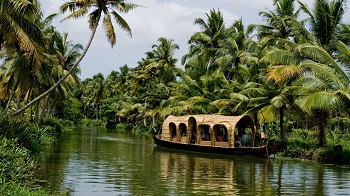

Kuttanad
Kuttanad is a region covering a large part of Alappuzha and some of Kottayam district, the heart of the backwaters of Kerala. Kuttanad is the 'rice bowl of Kerala', being home to lush green rice fields spread extensively, divided by dykes. Travelling through this secluded alcove of nature will give you a feel of traditional countryside life of Kerala. A special peculiarity of this place is its geography. It lies around 2 metres below the main sea level, making it the lowest altitude place in the country.

Alappuzha Beach
The Alappuzha beach, also known as the Alleppey Beach, is famous for local getaways, its intrinsic beauty and a 150 years old pier which stretches into the sea. Relaxing under the palm groves and picnicking beside the beach are fantastic options available to those visiting the beach. Alleppey Beach is a host to many festivals like Sand Art festival and Alappuzha Beach Festival.